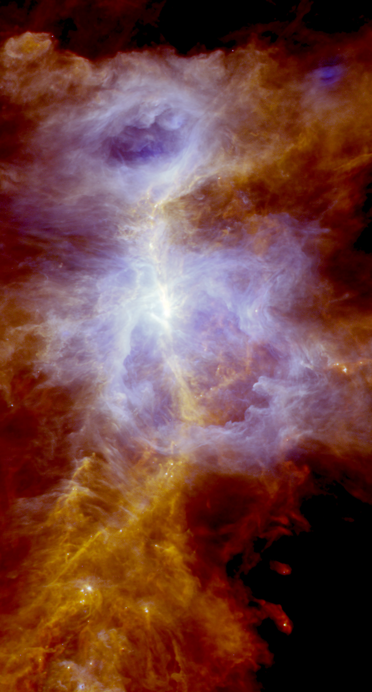

![]()
Basado en el trabajo (Abreu-Vicente et al. 2017). English version 🇬🇧🇺🇸
Las nubes moleculares y los procesos inductores de formación estelar
Las estrellas nacen en las regiones más densas y frías del medio interestelar, dentro de enormes colecciones de moléculas y polvo conocidas como nubes moleculares (más información en Jorge Abreu-Vicente 2023). Debido a sus frías temperaturas de aproximadamente 250 grados bajo cero, las nubes moleculares no emiten en óptico, apareciendo como parches negros respecto al fondo estrellado en imágenes de rango visible1. La luz emitida por las nubes moleculares tiene una longitud de onda de entre 60 y 1000 micras, unas 100 veces más larga que las frecuencias a las que son sensibles nuestros ojos (entre 0.4 y 0.7 micras) o telescopios ópticos como los de aficionados.
La astronomía en el infrarrojo lejano es imposible desde tierra, pues nuestra atmósfera bloquea dicha radiación. Sólo la utilización de telescopios espaciales como Herschel o Planck puede abrirnos la puerta al estudio de las nubes moleculares y los secretos de la física de formación estelar.
Las nubes moleculares emiten también en ondas sub- y milimétricas, que sí son observables con radiotelescopios como el IRAM 30m desde tierra. De hecho, necesitamos la unión de observaciones espaciales y de tierra para estudiar las nubes moleculares en su totalidad.
Como ha sido mostrado en (Jorge Abreu-Vicente 2023), hay una relación directa entre la distribución de gas y polvo de una nube molecular y su actividad de formación estelar. Concretamente, las nubes moleculares con mayores cantidades de gas de alta densidad forman más estrellas que nubes moleculares con gas de baja densidad. En dicho proyecto también comentamos que el paradigma actual de los procesos físicos causantes de la formación estelar tiene dos candidatos principales: gravedad y turbulencia2. Aunque dicho trabajo parece decidirse por la gravedad, mayor y más directa prueba es necesaria para tal afirmación. El problema es que distinguir entre gravedad y turbulencia requiere muy precisas medidas de la densidad o masa de las nubes moleculares.
Éste es uno de los principales objetivos científicos del lanzamiento del Observatorio Espacial Herschel, de la Agencia Espacial Europea (ESA). El método utilizado por Herschel para medir la densidad de nubes moleculares es el siguiente. Las nubes moleculares emiten siguiendo la Ley de Planck. Esto significa que la nube molecular emite como un cuerpo en equilibrio termodinámico y por tanto su emisión está determinada por su temperatura y su densidad. Las emisiones de las nubes moleculares como función de la longitud de onda emitida se pueden observar en la Figura 1. En dicha figura, se observan 5 sombras verticales que equivalen a las longitudes de onda a las que Herschel es sensible. Para cada una de las curvas, la longitud de la onda a la que se encuentra el máximo de emisión se determina por la temperatura de la nube molecular. Asimismo, el valor de dicho máximo en el eje vertical está relacionado con la densidad de gas observado. A mayor densidad de gas, mayor será la emisión. Así, conociendo la función empírica de la Ley de Planck y teniendo los cinco valores de Herschel, podemos hacer un ajuste de las observaciones para obtener la temperatura y densidad de la nube molecular que está siendo observada.

Los problemas de calibración de Herschel y las consecuencias para la investigación
El problema al que nos enfrentamos es el siguiente: las observaciones de Herschel a 100 y 160 micras no han sido calibradas de forma debida. Y una mala caliración de los instrumentos lleva inexorablemente a medidas erróneas o menos precisas. Si queremos medir la densidad de gas en nubes moleculares para poder discernir si es la gravedad o la turbulencia quien induce el proceso de colpso gravitatorio que lleva a la formación estelar, necesitamos mejorar esta calibración instrumental. El hecho es que la diferencia observacional que predicen los modelos para discernir entre turbulencia o gravedad es tan sutil que las observaciones necesarias para tal fin han de ser extremadamente precisas. El objetivo de este trabajo es mejorar la calibración de los instrumentos y generar los mapas de temperatura y densidad más exactos nunca obtenidos de todo el plano galáctico.
La definición del nivel de cielo o nivel cero de la emisión observada por Herschel a 100 y 160 micras no está bien definida, generando imprecisiones en las medidas. El objetivo de este trabajo es combinar las observaciones de Herschel y Planck para mejorar la calibración de nivel cero, obteniendo así mapas más precisos de temperatura y densidad de las nubes moleculares galácticas. Esto ayudará a mejorar nuestro entendimiento sobre qué proceso es el responsable de inducir la actividad de formación estelar.
La calibración de dichas bandas se ha llevado a cabo originalmente bajo la suposición de que el cielo emite igual en todo el campo de visión. Ésto es definitivamente falso. Por no ser tan duro, quizá podríamos llamarlo una sobresimplificación. En regiones de alta emisión debido al polvo como es el plano galáctico, la variación de emisión es tan importante que asumir un fondo de cielo constante resulta en una calibración tan exacta como lanzar tres dados de 20 caras y tratar de predecir sus resultados exactamente. Y sin una calibración exacta, no se pueden medir densidades ni teperaturas exactas de nubes molecularesque por consiguiente lleva al hecho de que no se puede determinar qué procesos físicos actúan en la formación estelar. Los errores de calibración, aunque pueden ser pequeños para los objetos más compactos (de pequena extensión en la imagen), se hacen enormes e impredecibles a gran escala, en las zonas más difusas de las nubes moleculares. Esto acentúa más si cabe nuestro problema, pues es en las zonas difusas a gran escala, donde la mayor parte de la masa de las nubes moleculares se encuentra. Son también estas zonas las que muestran menos actividad de formación estelar y por ende son las más interesantes a estudiar para poder discernir qué procesos hacen que una zona difusa pase a ser densa y consecuentemente a formar estrellas.
Combinar los datos de Herschel y Planck para obtener mapas de temperatura y densidad más precisos
En este trabajo tomamos ventaja del lanzamiento de otro observatorio espacial que, aunque destinado a una misión completamente distinta (medir el eco del Big Bang), nos da las herramientas necesarias para recalibrar las observaciones de Herschel. El observatorio Planck generó observaciones a gran escala de cielo completo en su búsqueda del fondo cósmico de microondas. Para lograr su objetivo, Planck tenía un pequeño obstáculo. Medir la radiación fondo cósmico implica saber qué hay detrás de nuestra propia Galaxia: la Vía Láctea. Planck debía, por tanto, sustraer la emisión de nuestra Galaxia, pues ésta bloquea la radiación de fondo cósmico por estar entre éste y nosotros. Por ello, Plank generó unos mapas de densidad y temperatura del cielo muy precisos, aunque a resoluciones angulares mayores que las de Herschel. Éstos mapas los podemos usar nosotros para recalibrar las imágenes de Herschel.
En este caso, Planck nos da la temperatura y densidad de cada punto de la Vía Láctea. Nosotros tomamos dicha información y con ello hacemos una ingeniería inversa a la del proceso mostrado en la Figura 1. Usando la temperatura y densidad del gas obtenidas en cada punto de la Vía Láctea con el telescopio Planck, podemos calcular la emisión teórica de cada punto de la Galaxia usando la Ley de Planck.(Por desgracia teneoms que usar el nombre de Planck para mencionar dos objetos diferentes. Notad que la Ley de Planck es la función matemática de emisión de las nubes moleculares, mientras que Planck en cursiva se refiere al telescopio.) Ahora, conociendo la emisión teórica de cada punto de la galaxia y sabiendo, además, la sensibilidad exacta de Herschel a cada longitud de onda, podemos obtener imágenes simuladas de qué vería el telescopio Planck si tuviera los mismos instrumentos que tiene el telescopio Herschel. En este caso, además, sabemos que la calibración de Planck es muy precisa, pues este es un requerimiento clave para el éxito de la misión Planck. En definitiva, podemos usar las observaciones de Planck para corregir los problemas de calibración a gran escala de Herschel, obteniendo así el mejor mapa de densidad y temperatura de la Vía Láctea existente.
El lector se preguntará: y si Planck tiene ya los mapas de densidad y temperatura… Por qué diablos no usarlos y librarnos de todo este arduo trabajo? La respuesta es que Planck es un telescopio mucho más pequeño que Herschel. Esto se traduce en que Planck tiene una importante miopía con respecto a Herschel. En otras palabras, las observaciones de Herschel son mucho más nítidas y revelan detalles más sutiles que las de Planck. Es como si Herschel usara gafas para corregir la miopía de Planck. Concretamente, a 100 y 160 micras Herschel puede ver detalles 12 y 17 veces respectivamente más pequeños que Planck. Se puede observar claramente este hecho en Figura 2, Figura 3 y Figura 4. Esto es especialmente importante, pues es en esos pequeños detalles que revela Herschel donde debemos de buscar las repuestas a las preguntas abiertas sobre el proceso de formación estelar.



Debido a que este proceso requiere una explicación técnica muy especializada e intensa, no entramos más a fondo en este post, remitiendo al lector a (Abreu-Vicente et al. 2017) para más información. A modo de pequeño resumen, diremos que la téncnica utilizada sigue una serie de pasos:
Obtener mapas de emisión simulada sobre cómo Planck observaría usando los mismos instrumentos que Herschel.
Calibración conjunta de los datos de Herschel y Planck. Asegurarnos que ambos están en la misma escala.
Combinar las imágenes de Herschel y Planck en el espacio de Fourier.
Los resultados obtenidos con esta técnica han demostrado ser realmente espectaculares. Para poder mostrar su validez, primero aplicamos el método a una nube molecular simulada, de la cual podríamos saber con exactitud su densidad y temperaturas reales. Tras validar el método, lo aplicamos a dos regiones de prueba: Orión y Perseo. La segunda se puede ver en la Figura 5. La aplicación de nuestro método ha mejorado la estimación de masas observadas por Herschel en Perseo en valores de hasta el 30%. En general, nuestro método es capaz de corregir las masas (equivalente a densidades en los métodos utilizados) de nubes moleculares en factores que varían del 1 al 100. Este logro es verdaderamente impresionante y en la actualidad se está aplicando a la totalidad de observaciones de la Vía Láctea llevadas a cabo por Herschel. Una vez finalizado, habremos conseguido el más exacto mapa de temperatura y densidad de nubes moleculares en la Vía Láctea existente hasta la fecha. Gracias a este trabajo, esperamos finalmente contribuir a la respuesta al enigma de turbulencia o gravedad como principal causante de la formación estelar.

Referencias
Notas
El rango de luz visible es la luz emitida a frecuencias sensibles para nuestros ojos. Para más información sobre el espectro electromagnético visitar la WikiPedia↩︎
Aunque no ha sido comentado en estos trabajos, hay un tercer proceso que se cree causante de inducir el inicio del proceso de formación estelar. Se trata de la compresión de las nubes moleculares por radiación de estrellas masivas o explosiones de supernova (Li, Frank, y Blackman 2014).↩︎
Cómo citar
@online{jorge abreu-vicente2023,
author = {Jorge Abreu-Vicente, Dr.},
title = {Obteniendo la mejor imagen en infrarrojo lejano de la Vía
Láctea},
date = {2023-11-01},
url = {https://drAbreu.github.io/web/es/posts/2023-11-01-mejor-imagen-via-lactea-infrarrojo/},
langid = {es}
}